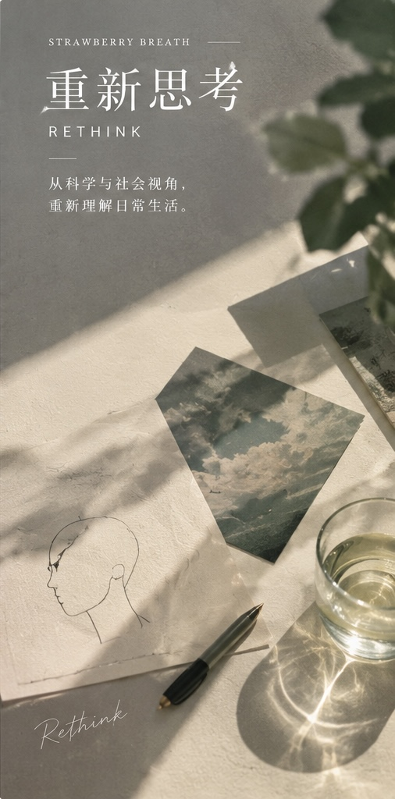

COLUMN 03 / REFLECTIONS
重新思考RETHINKING
从日常生活里那些想不明白的事情出发，换一个角度看看情绪、关系和行为。
这里记录个人阅读、生活观察与仍在形成中的问题。借助心理学、认知科学与社会学，重新看待习以为常的观念；不急着给出标准答案，也保留质疑与独立判断。
THE JOURNAL / LATEST FIRST
文章与思考
个人阅读与生活观察 · 慢慢更新
亲密关系中的五种爱的语言
从一本流行关系读物出发，讨论表达关爱的方式、需求如何错位，以及为什么“爱的语言”不应取代平等、尊重与边界。
阅读这篇文章 →